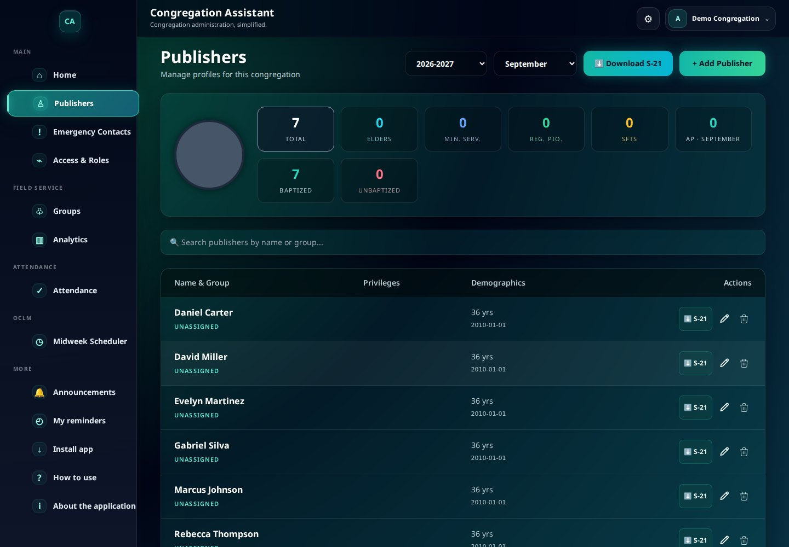
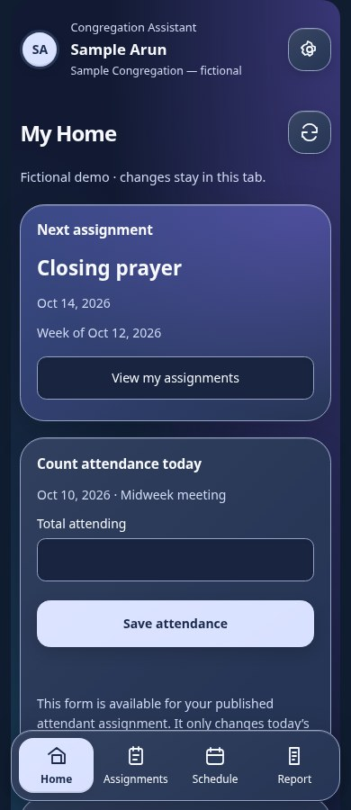
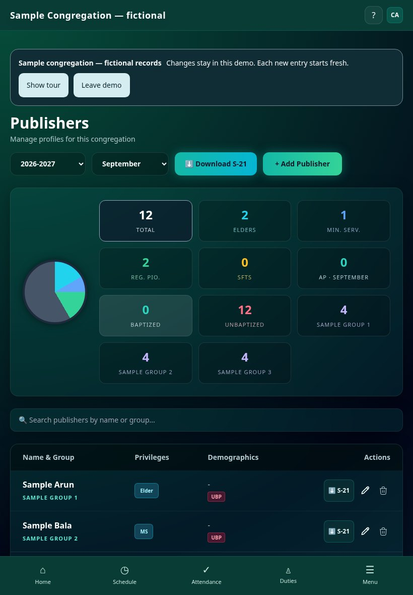
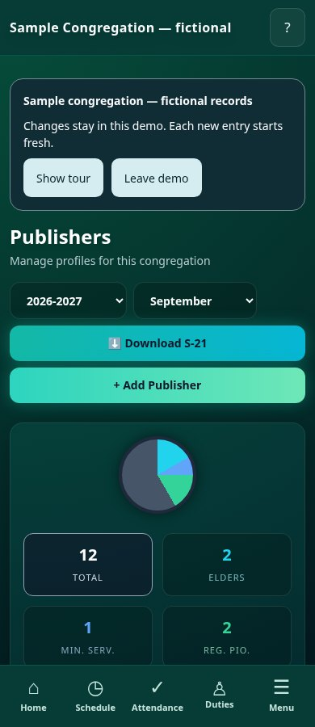

FIELD SERVICE
Keep records together.
Publisher profiles, groups, monthly reports, and rosters in one workspace. Export your contacts and reports when you need a copy.
A calmer way to keep things organized
Records, reports, attendance, and meeting schedules. Bring the work together in one clear workspace, on your phone or your computer.
One congregation. One workspace. No software installation required.


Familiar work. A simpler flow.
Choose the tools you need without searching through a crowded screen. The mobile menu follows the same sections as the desktop workspace.
FIELD SERVICE
Publisher profiles, groups, monthly reports, and rosters in one workspace. Export your contacts and reports when you need a copy.
ATTENDANCE
Your meeting calendar sets the public form’s week, month, service year and meeting type. Memorial attendance has its own history. Review the month and create S-3 and S-88 PDFs. Create S-21 publisher records from your stored reports.
MIDWEEK MEETINGS
Arrange parts and assignments, add the extra duties your congregation needs, review the schedule, and publish it for others. Cloud setup enables one link for later published updates.
Approved publishers can find assignments, open the schedule, submit the familiar report and update contact details. Settings keeps occasional tasks out of the way. See how reminders work ↗
Use your phone, iPad or computer browser—no installation required. Dedicated mobile apps are planned for later. An optional home-screen shortcut opens the same web software. Browser and shortcut guide ↗
Family contact details and a printable list.
Supported contact and report imports and exports.
One Google login for all your assigned roles, with optional section assistants. Which role does what? ↗
Take a look before you decide
See the actual software on a desktop, tablet and phone. Choose a task below; every screen uses fictional Demo Congregation records.
Keep profiles and reporting tasks together.


Actual software screenshots, captured with fictional Demo Congregation data. Device frames are visual mockups. No real congregation records are displayed or submitted.
Start without the overwhelm
Tell us which congregation you are helping and who should receive account setup details.
After your request is reviewed, receive your congregation ID and setup link. Use the approved Google account; your administrator assigns the tools you need.
Try a sample schedule or attendance count first. Follow the guide, review the result, then bring in authorized records when setup has been verified.
Clear answers about your information
The website is public. Your congregation’s private records require an approved account in the secure workspace. We explain the limits before you add real information.
Your administrator approves each account. The secure backend checks congregation and role access. One account can handle several responsibilities.
Anyone with a published schedule link can read the assigned names and duties. Report and attendance links allow their specific task. Treat these links like keys: share carefully and revoke form links when needed.
Google sign-in requests your basic profile and email. It does not request access to your Gmail messages, Drive files or calendar. Account approval is still required.
The software owner’s service administrator and privileged backend access can access records for administration and support. Ask what support access is needed before sharing information. Do not email publisher records, passwords or private links.
Approved accounts use congregation and role checks. Secure workspaces can save shared schedule drafts online; publishing is a separate step. Password-protected backup exports are available. This software does not claim end-to-end encryption. Export encryption does not mean the database is end-to-end encrypted. Keep a backup and rehearse recovery before relying on it. Existing legacy workspaces have not been migrated automatically.
Understand sharing and recovery ↗One clear introductory offer
Give your congregation time to try the workflow. Request a full 30-day trial, then continue with the introductory annual offer if it suits your needs.
✓ 30 days to explore the workflow
✓ One congregation workspace
✓ No automatic checkout or charge
✓ Keep your own contact and report exports
Annual access per congregation after your trial.
Account setup is coordinated with you. Cloud access and live-link activation are completed during setup. No purchase happens on this page.
Explore first. No real records.
Open a fresh, fictional congregation. Try complete meeting schedules, additional duties, reports, attendance and publisher pages. Changes stay in your browser tab; nothing is sent to the congregation database.
These are public demo details, not real account credentials. Each new sign-in resets the sample. Use Reset demo to start again. Email and push delivery are not simulated as real delivery.
A few useful answers
Clear expectations make getting started easier.
Congregation Assistant is independently developed by a brother based in India who serves full-time in Jehovah’s organisation. It was created to help simplify congregation administration. It is not an official application of Jehovah’s Witnesses and is not endorsed by their organisation. Before entering publisher information, read the privacy and sharing explanation and confirm your congregation’s authorization.
For support or privacy questions, contact . Do not email publisher records, passwords or private links.
The interface uses Noto Sans and supports larger text. Publisher appearance choices stay separate from meeting-schedule colours. The mobile workspace uses larger controls, readable text, and sections that match desktop. Try it with the people who will use it; feedback during your trial helps identify confusing steps.
Yes. Approved publishers can create reminders and export assignment reminders to their calendar. Each overseer role also has reminder settings for its assigned work: OCLM planning three weeks ahead, attendance and form-link sharing on chosen days, and service reports on the 1st. App alerts work while signed in with the app open. Import calendar reminders for alerts when closed; automatic background push and messages are not configured. Read the reminder guide.
You can open the application in a modern browser. Once opened, use Install app when your browser offers it, or add it to your home screen. An internet connection is needed for cloud records and publishing.
The OCLM overseer publishes meeting parts and shares one notice-board link. Other overseers publish their duties independently to the same board. Unassigned duties show “Not assigned”. Name search includes meeting and department assignments. Every department requests publishers from the congregation list for main-administrator approval. Draft choices stay private until published.
Your administrator approves Google accounts and assigns roles during setup. The secure database checks active congregation and role grants on private-record access. Existing legacy workspaces still need a separate security review. Public report, attendance, and schedule links are intended for their recipients and should be shared carefully.
You decide whether to continue. The introductory annual offer is ₹1,499 per congregation. Payment and activation are arranged manually; this website does not collect a card or charge you automatically.
Administrators can export a password-protected workspace backup and restore its supported records, settings and schedules. Keep the password separately: it is needed to open the file. A combined CSV can import publisher details and monthly reports together after a review. Contact and report exports are also available. Reports keep two complete service years; remove older downloaded backup copies separately. Rehearse recovery with fictional records before relying on a backup.
The website and software interface are visible online. Approved sign-in is required for private records in the secure workspace. A shared schedule or form link can be used by anyone who receives it. Never put passwords or private records in a trial request. Read about sharing and privacy.
Congregation Assistant is an independently developed application. Using familiar report names does not imply official endorsement. Confirm your congregation's authorization before submitting an account request.
Let’s make the everyday work easier
Tell us a little about your congregation. We’ll help you arrange account setup and your 30-day trial.
Already have an account? Open the application ↗